A bowl of rich broth, tender pork, boiled egg, and fresh vegetables served with perfectly cooked noodles.
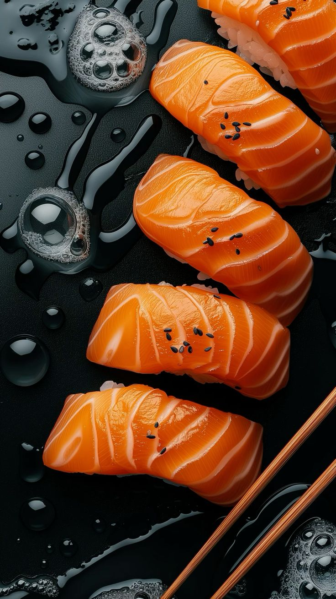
Fresh, vinegared rice topped with slices of raw fish or vegetables, creating a delicate and flavorful bite.
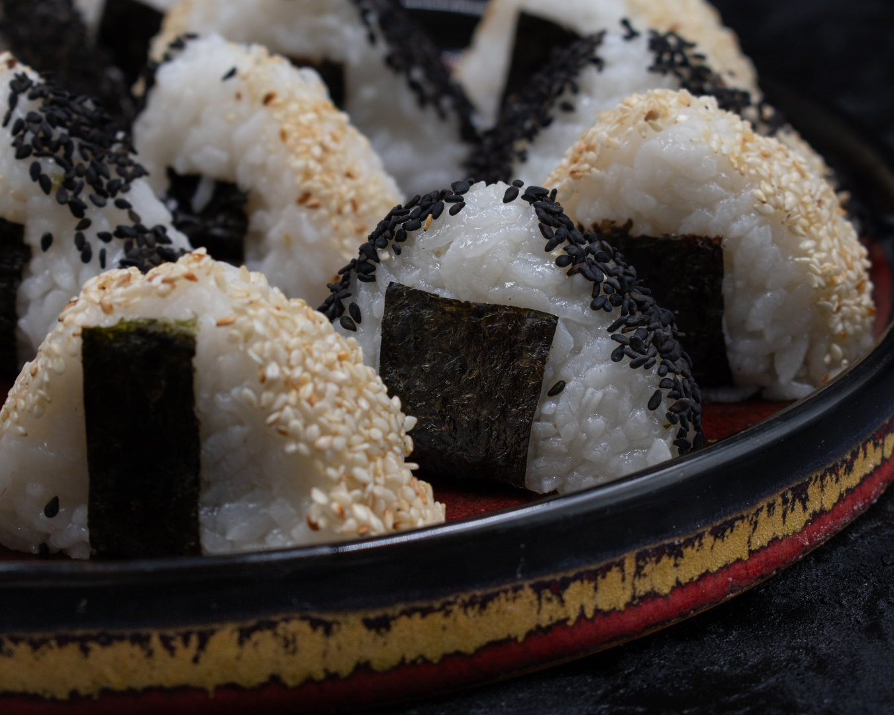
Savory rice balls filled with a variety of ingredients like pickled plum, salted salmon, or tuna, wrapped in seaweed for a portable and delicious snack.
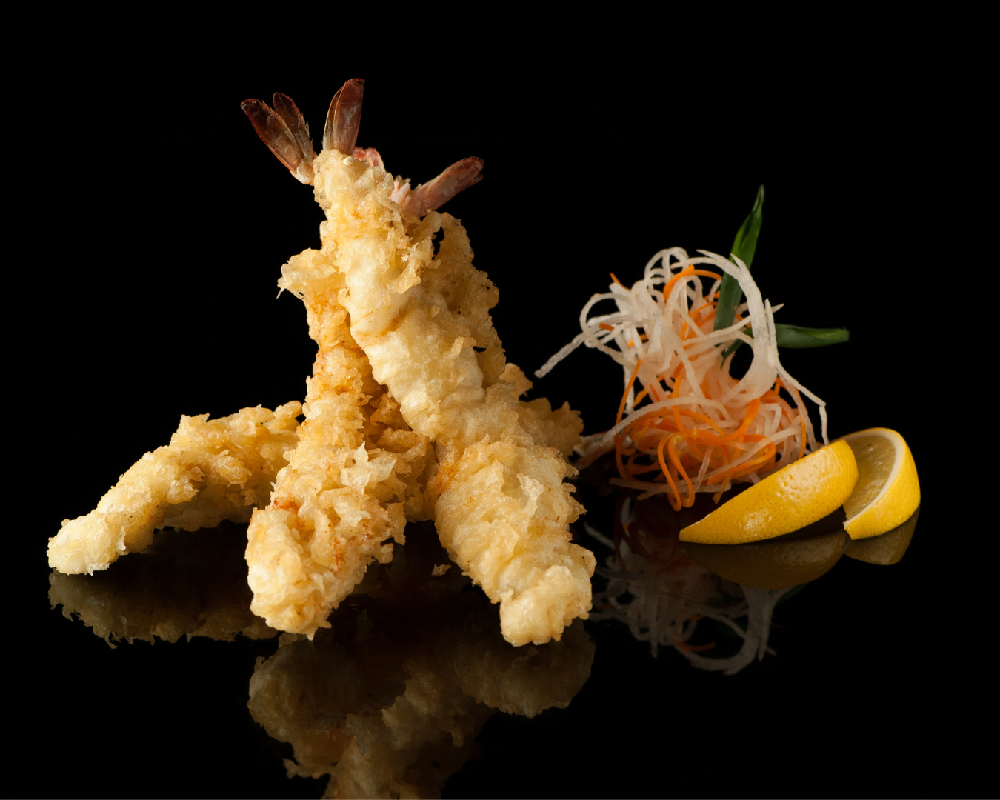
Crispy battered vegetables and seafood, served with a savory dipping sauce.
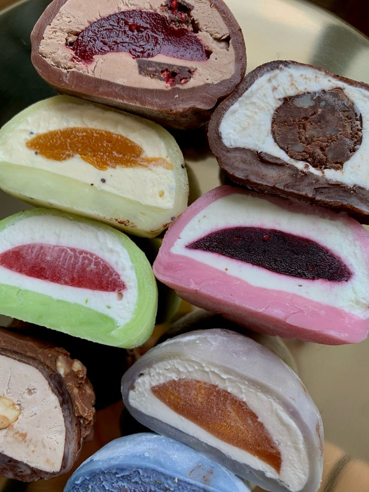
Chewy, sweet rice dough with a variety of delicious fillings like red bean or matcha.
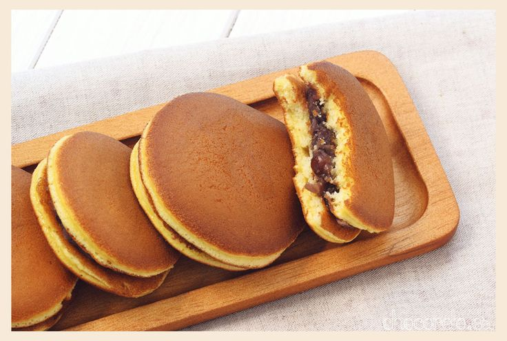
Sweet, fluffy pancakes filled with smooth red bean paste.
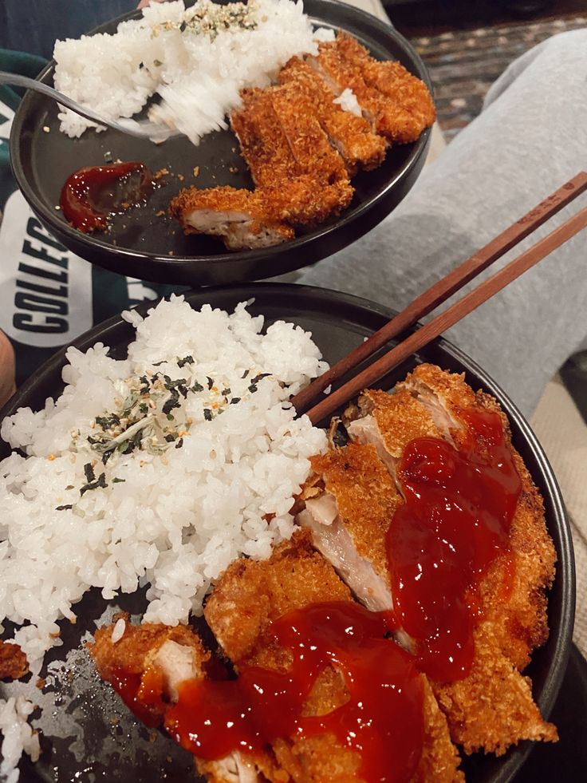
Crispy breaded pork or chicken cutlet, served with a tangy tonkatsu sauce.
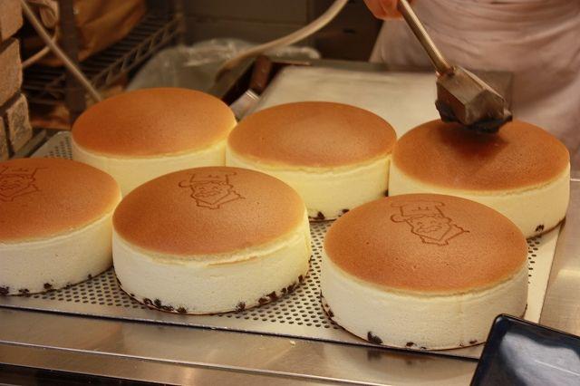
Fluffy pancakes drizzled with maple syrup and a dollop of butter.
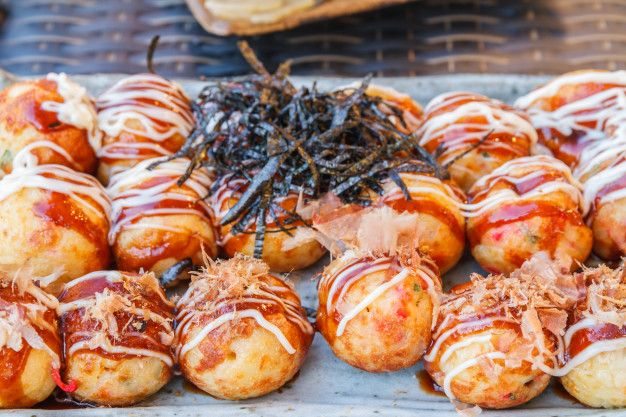
Golden, crispy dough balls filled with octopus, drizzled with savory sauce and bonito flakes.
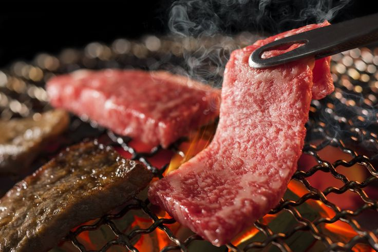
Tender and juicy grilled Wagyu beef, served with mashed potatoes and seasonal vegetables.
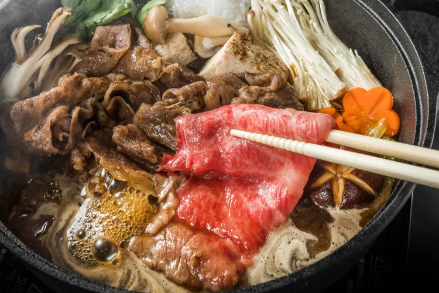
Warm and hearty soup made with fresh ingredients and spices.
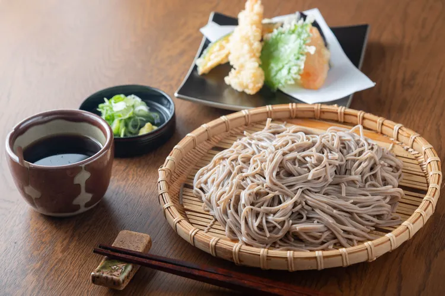
Buckwheat noodles served hot or cold, paired with a light soy-based broth and garnished with scallions.